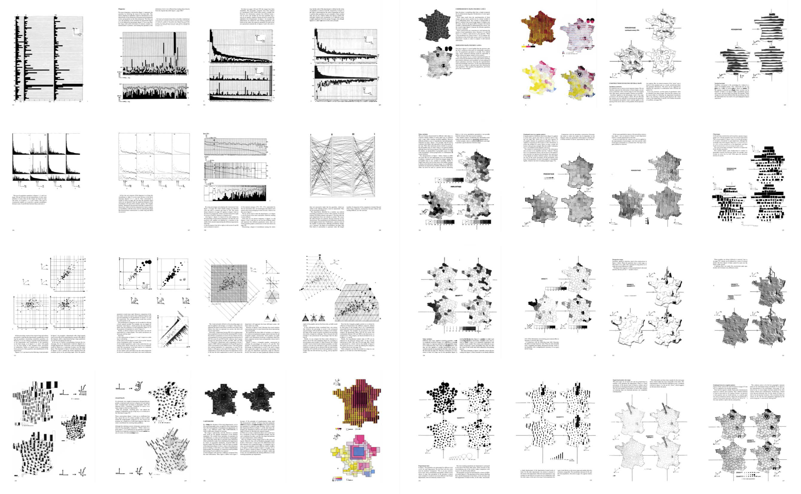
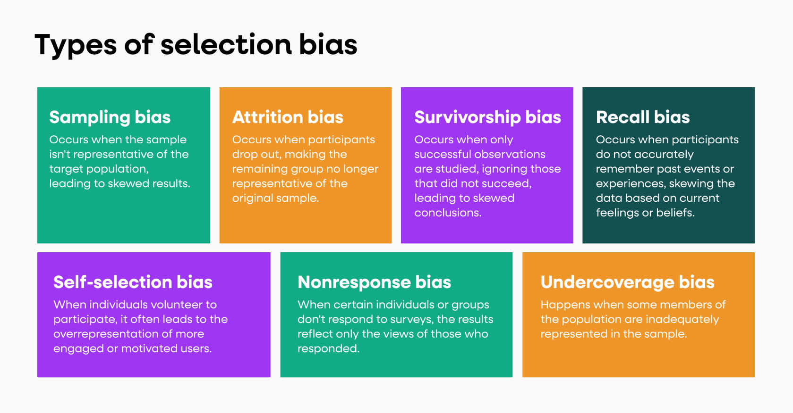

import altair as alt
import pandas as pd13 Interazioni
Un grafico non viene ‘disegnato’ una volta per tutte; viene ‘costruito’ e ricostruito finché non rivela tutte le relazioni costituite dall’interazione dei dati. Le migliori operazioni grafiche sono quelle eseguite dal decisore stesso — Jacques Bertin

La visualizzazione fornisce un potente mezzo per dare un senso ai dati. Una singola immagine, tuttavia, in genere fornisce risposte, nella migliore delle ipotesi, a una manciata di domande. Attraverso l’interazione possiamo trasformare immagini statiche in strumenti di esplorazione: evidenziando punti di interesse, ingrandendo per rivelare modelli più dettagliati e collegando più viste per ragionare sulle relazioni multidimensionali.
Al centro dell’interazione c’è il concetto di selezione: un mezzo per indicare al computer quali elementi o regioni ci interessano. Ad esempio, potremmo passare il mouse su un punto, cliccare su più indicatori o disegnare un riquadro di delimitazione attorno a una regione per evidenziare sottoinsiemi di dati per un’ulteriore analisi.
Oltre alle codifiche visive e alle trasformazioni dei dati, Altair fornisce un’astrazione di selezione per la creazione di interazioni. Queste selezioni comprendono tre aspetti: 1. Gestione degli eventi di input per selezionare punti o regioni di interesse, come eventi di passaggio del mouse, clic, trascinamento, scorrimento e tocco. 2. Generalizzazione dall’input per formare una regola di selezione (o predicato) che determina se un dato record di dati rientra o meno nella selezione. 3. Utilizzo del predicato di selezione per configurare dinamicamente una visualizzazione tramite codifiche condizionali, trasformazioni di filtro o domini di scala.
Questo notebook introduce le selezioni interattive (selection) e spiega come utilizzarle per creare una varietà di tecniche di interazione, come: 1. query dinamiche, 2. Panning&Zoom, 3. Details on Demand, 4. brushing&linking.
Visualizzeremo una varietà di set di dati dalla raccolta vega-datasets: 1. Un set di dati di auto degli anni ’70 e dei primi anni ’80, 2. Un set di dati di film, precedentemente utilizzato nel notebook Data Transformation, 3. Un set di dati contenente dieci anni di prezzi delle azioni dell’indice S&P 500 (sp500), 4. Un set di dati di azioni di società tecnologiche e 5. Un set di dati di voli, inclusi orario di partenza, distanza e ritardo all’arrivo.
cars = 'https://cdn.jsdelivr.net/npm/vega-datasets@1/data/cars.json'
movies = 'https://cdn.jsdelivr.net/npm/vega-datasets@1/data/movies.json'
sp500 = 'https://cdn.jsdelivr.net/npm/vega-datasets@1/data/sp500.csv'
stocks = 'https://cdn.jsdelivr.net/npm/vega-datasets@1/data/stocks.csv'
flights = 'https://cdn.jsdelivr.net/npm/vega-datasets@1/data/flights-5k.json'13.1 🍒 Altair selection
La selection in Altair permette di costruire un punto fra input dell’utente e selezione di specifiche parti del grafico, in maniera tale da poterle visualizzare in maniera diversa. Le due categorie fondamentali di selection vengono distinte per numero di elementi individuati dalla selezione: - uno - piu di uno
Inoltre la selezione effettuata puo essere: - statica - dinamica
Per prima cosa affrontiamo la selezione singola, che viene implementata in Altair con selection_point. Questa funzione: 1. identifica quali punti del grafico sono stati oggetto di interazione con l’utente 2. li evidenzia con una colonna aggiuntiva booleana aggiunta al dataset
Possiamo quindi utilizzare questa colonna per eventuali codifiche su encoding channels per campi non-numerici, come il colore o la forma.
NOTA
La spiegazione del funzionamento del codice realativo alle funzioni di questa sezione e intuitivo e non preciso.
selection = alt.selection_point();
alt.Chart(cars).mark_circle().add_params(
selection # aggiunta della colonna di selezione al dataset
).encode(
x='Horsepower:Q',
y='Miles_per_Gallon:Q',
color=alt.condition(selection, 'Cylinders:O', alt.value('grey')),
opacity=alt.condition(selection, alt.value(0.8), alt.value(0.1))
)In questo caso i punti del grafico selezionati vengono colorati in base al campo Cylinders, tutti lgi altri vengono colorati con un grigio di default. Stessa cosa vale per il canale opacity. Se non si interagisce sul grafico o si seleziona uno spazio vuoto, otteniamo la selezione nulla, che applica la condizione a tutti i punti del grafico,
L’operazione selection_point permette di selezionare un punto alla volta, tuttavia esistono altri 2 tipi di interazione che permettono di: - selezionare piu punti (selection_multi), funzione ormai deprecata, - selezionare un’area del grafico ed i punti al suo interno (selection_interval).
# utility function
def plot(selection):
return alt.Chart(cars).mark_circle().add_params(
selection
).encode(
x='Horsepower:Q',
y='Miles_per_Gallon:Q',
color=alt.condition(selection, 'Cylinders:O', alt.value('grey')),
opacity=alt.condition(selection, alt.value(0.8), alt.value(0.1))
).properties(
width=240,
height=180
)alt.hconcat(
plot(alt.selection_point()).properties(title='Single (Click)'),
plot(alt.selection_interval()).properties(title='Interval (Drag)')
)plot(alt.selection_point(on = 'mouseover'))13.2 🧹 Query Dinamiche
Le query dinamiche consentono un’esplorazione rapida e reversibile dei dati per isolare i pattern di interesse. Come definito da Ahlberg, Williamson e Shneiderman, una query dinamica: 1. rappresenta graficamente una query, 2. fornisce limiti visibili all’intervallo di query, 3. fornisce una rappresentazione grafica dei dati e del risultato della query, 4. fornisce un feedback immediato del risultato dopo ogni modifica alla query, 5. e consente agli utenti inesperti di iniziare a lavorare con una formazione minima.
Costruiamo un grafico a dispersione interattivo che utilizzi una query dinamica per filtrare la visualizzazione. Dato un grafico a dispersione delle valutazioni dei film (da Rotten Tomatoes e IMDB), possiamo aggiungere una selezione sul campo Major_Genre per abilitare il filtro interattivo per genere cinematografico.
df = pd.read_json(movies) # load movies data
genres = df['Major_Genre'].unique() # get unique field values
genres = list(filter(lambda d: d is not None, genres)) # filter out None values
genres.sort() # sort alphabetically
genres['Action',
'Adventure',
'Black Comedy',
'Comedy',
'Concert/Performance',
'Documentary',
'Drama',
'Horror',
'Musical',
'Romantic Comedy',
'Thriller/Suspense',
'Western']# MPA rating values
mpaa = ['G', 'PG', 'PG-13', 'R', 'NC-17', 'Not Rated']selectGenre = alt.selection_point(
name='Select', # name the selection 'Select'
fields=['Major_Genre'], # limit selection to the Major_Genre field
value=[{'Major_Genre': genres[0]}], # use first genre entry as initial selected value
bind=alt.binding_select(options=list(genres)) # bind to a menu of unique genre values
)
alt.Chart(movies).mark_circle().add_params(
selectGenre
).encode(
x='Rotten_Tomatoes_Rating:Q',
y='IMDB_Rating:Q',
tooltip='Title:N',
opacity=alt.condition(selectGenre, alt.value(0.75), alt.value(0.05)),
color = alt.condition(selectGenre, 'Major_Genre:N', alt.value('grey'))
)# single-value selection over [Major_Genre, MPAA_Rating] pairs
# use specific hard-wired values as the initial selected values
selection = alt.selection_point(
name='Select',
fields=['Major_Genre', 'MPAA_Rating'], # campi di scelta
value=[{'Major_Genre': 'Drama', 'MPAA_Rating': 'R'}], #valori scelti all'inizio
bind={'Major_Genre': alt.binding_select(options=genres), 'MPAA_Rating': alt.binding_radio(options=mpaa)} # type: ignore
)
# scatter plot, modify opacity based on selection
alt.Chart(movies).mark_circle().add_params(
selection
).encode(
x='Rotten_Tomatoes_Rating:Q',
y='IMDB_Rating:Q',
tooltip='Title:N',
opacity=alt.condition(selection, alt.value(0.75), alt.value(0.05)),
color = alt.Color(alt.condition(selectGenre, 'Major_Genre:N', alt.value('grey')), )
)brush = alt.selection_interval(
encodings=['x'] # limit selection to x-axis (year) values
)
# dynamic query histogram
years = alt.Chart(movies).mark_bar().add_params(
brush
).encode(
alt.X('year(Release_Date):T', title='Films by Release Year'),
alt.Y('count():Q', title=None)
).properties(
width=650,
height=50
)
# scatter plot, modify opacity based on selection
ratings = alt.Chart(movies).mark_circle().encode(
x='Rotten_Tomatoes_Rating:Q',
y='IMDB_Rating:Q',
tooltip='Title:N',
opacity=alt.condition(brush, alt.value(0.75), alt.value(0.05))
).properties(
width=650,
height=400
)
alt.vconcat(years, ratings).properties(spacing=5)🔥 Selection Bias? Interagendo con il grafico, e possibile trovare traccia di selectin bias?

Un’altra applicazione molto attraente di questa tecnica la possiamo vedere sulla matrice di scatter plot, la SPLOM.
brush = alt.selection_interval(
resolve='intersect' # resolve all selections to a single global instance
)
alt.Chart(cars).mark_circle().add_params(
brush
).encode(
alt.X(alt.repeat('column'), type='quantitative'),
alt.Y(alt.repeat('row'), type='quantitative'),
color=alt.condition(brush, 'Cylinders:O', alt.value('grey')),
opacity=alt.condition(brush, alt.value(0.8), alt.value(0.1))
).properties(
width=140,
height=140
).repeat(
column=['Acceleration', 'Horsepower', 'Miles_per_Gallon'],
row=['Miles_per_Gallon', 'Horsepower', 'Acceleration']
)Il parametro resolve del generatore della selection e molto utile, permette di conciliare diversi insiemi di punti selezionati su grafici diversi: - resolve = global: vincola la selezione ad uno soltanto dei grafici alla volta, - resolve = union: il gruppo risultante di punti selezionati sara uguali all’unione dei punti selezionati su ogni grafico, - resolve = intersect: il gruppo risultante di punti selezionati sara uguali all’unione dei punti selezionati su ogni grafico,
13.2.1 Cross-filtering
Infine un’ultima applicazione di query dinamiche.
Gli esempi di brushing e linking che abbiamo esaminato utilizzano tutti codifiche condizionali, ad esempio per modificare i valori di opacità in risposta a una selezione. Un’altra opzione è quella di utilizzare una selezione definita in una vista per filtrare il contenuto di un’altra vista (cross-filtering).
Creiamo una raccolta di istogrammi per il dataset dei voli: ritardo all’arrivo (in minuti, con quale anticipo o ritardo arriva un volo), distanza percorsa (in miglia) e ora di partenza (ora del giorno). Useremo l’operatore repeat per creare gli istogrammi e aggiungeremo una selezione di intervalli selection_interval per l’asse x, con conflitti di selezione inter-grafico risolti tramite intersezione.
In particolare, ogni istogramma sarà composto da due livelli: 1. un livello di sfondo grigio, 2. un livello di primo piano blu, con il livello di primo piano filtrato dall’intersezione delle selezioni di pennello.
Il risultato è un’interazione di filtraggio incrociato tra i tre grafici!
brush = alt.selection_interval(
encodings=['x'],
resolve='intersect'
);
hist = alt.Chart().mark_bar().encode(
alt.X(alt.repeat('row'), type='quantitative',
bin=alt.Bin(maxbins=100, minstep=1), # up to 100 bins
axis=alt.Axis(format='d', titleAnchor='start') # integer format, left-aligned title
),
alt.Y('count():Q', title=None) # no y-axis title
)
alt.layer(
hist.add_params(brush).encode(color=alt.value('lightgrey')), # istogramma sfondo
hist.transform_filter(brush) # istogramma colorato sui valori selezionati
).properties(
width=700,
height=100
).repeat(
row=['delay', 'distance', 'time'],
data=flights
).transform_calculate(
delay='datum.delay < 180 ? datum.delay : 180', # clamp delays > 3 hours
time='hours(datum.date) + minutes(datum.date) / 60' # fractional hours
).configure_view(
stroke='transparent' # no outline
)13.3 🔍 Panning & Zooming
Questo tipo di interazione permette di cambiare la porzione di grafico che si visualizza a scherma, potendo decidere interattivamente il soggetto d’analisi.
alt.Chart(movies).mark_circle().add_params(
alt.selection_interval(bind='scales')
).encode(
x='Rotten_Tomatoes_Rating:Q',
y=alt.Y('IMDB_Rating:Q', axis=alt.Axis(minExtent=30)), # use min extent to stabilize axis title placement
tooltip=['Title:N', 'Release_Date:N', 'IMDB_Rating:Q', 'Rotten_Tomatoes_Rating:Q']
).properties(
width=600,
height=400
)
# codice equivalente
alt.Chart(movies).mark_circle().encode(
x='Rotten_Tomatoes_Rating:Q',
y=alt.Y('IMDB_Rating:Q', axis=alt.Axis(minExtent=30)), # use min extent to stabilize axis title placement
tooltip=['Title:N', 'Release_Date:N', 'IMDB_Rating:Q', 'Rotten_Tomatoes_Rating:Q']
).properties(
width=600,
height=400
).interactive()🔍 ATTENZIONE!
Cosa possiamo notare zoomando il grafico? Come sono distribuiti i dati? Sono distribuiti in modo continuo nello spazio oppure sono quantizzati?
E anche possibile limitare la direzione lungo la quale avviene lo zoom, specificando il parametro bind nel costruttore selection_interval.
alt.Chart(movies).mark_circle().add_params(
alt.selection_interval(bind='scales', encodings=['x'])
).encode(
x='Rotten_Tomatoes_Rating:Q',
y=alt.Y('IMDB_Rating:Q', axis=alt.Axis(minExtent=30)), # use min extent to stabilize axis title placement
tooltip=['Title:N', 'Release_Date:N', 'IMDB_Rating:Q', 'Rotten_Tomatoes_Rating:Q']
).properties(
width=600,
height=400
)13.3.1 Overview e Zoom
Una tecnica di visualizzazione molto utile che permette sia di visualizzare porzioni specifiche del grafico, che di mantenere una visione d’insieme sui dati prende il nome di Overview and Zoom. Per realizzarla con Altair, quello che possiamo fare e: 1. creare una selezione multipla con selection_interval, 2. concatenare verticalmente due grafici con vconcat, quello zoomato e quello globale, 3. fare in modo di generare l’asse X zoomato del grafico dinamicamente, facendo in modo che la funzione di scale, che mappa il campo date del dataset con l’asse, abbia come dominio proprio l’insieme di valori selezionato interattivamente dall’utente.
# interval selection lungo l'asse x
brush = alt.selection_interval(encodings=['x']);
# base chart
base = alt.Chart().mark_area().encode(
alt.X('date:T', title=None),
alt.Y('price:Q')
).properties(
width=700
)
# fissare la scale in base ai dati selezionati dall'utente
alt.vconcat(
base.encode(alt.X('date:T', title=None, scale=alt.Scale(domain=brush))),
base.add_params(brush).properties(height=60),
data=sp500
)13.4 🎛️ Details on-demand
Questo tipo di interazione, traducibile con dettagli su richiesta, permette di ottenere informazioni in piu su particolari punti del grafico, solamente quando richiesto attivamente dall’utente.
import numpy as np
hover = alt.selection_point(
on='mouseover', # select on mouseover
nearest=True, # select nearest point to mouse cursor
empty= False # empty selection should match nothing
)
click = alt.selection_point(
empty= False # empty selection matches no points
)
# scatter plot encodings shared by all marks
plot = alt.Chart().mark_circle().encode(
x='Rotten_Tomatoes_Rating:Q',
y='IMDB_Rating:Q'
)
# grafico che visualizza solamente i dati selezionati dall'utente in uno dei due modi definiti
base = plot.transform_filter(
hover | click # filter to points in either selection
)
# layer scatter plot points, halo annotations, and title labels
alt.layer(
plot.add_params(hover).add_params(click),
base.mark_point(size=100, stroke='firebrick', strokeWidth=1), # aureola
base.mark_text(dx=4, dy=-8, align='right', stroke='white', strokeWidth=2).encode(text='Title:N'), # sfondo bianch per la scritta
base.mark_text(dx=4, dy=-8, align='right').encode(text='Title:N'), # testo
data=movies
).properties(
width=600,
height=450
)Un grafico piu complesso sempre realizzato con lo stesso metodo e questo:
# select a point for which to provide details-on-demand
label = alt.selection_point(
encodings=['x'], # limit selection to x-axis value
on='mouseover', # select on mouseover events
nearest=True, # select data point nearest the cursor
empty=False # empty selection includes no data points
)
# define our base line chart of stock prices
base = alt.Chart().mark_line().encode(
alt.X('date:T'),
alt.Y('price:Q', scale=alt.Scale(type='log')),
alt.Color('symbol:N')
)
alt.layer(
base, # base line chart
# add a rule mark to serve as a guide line
alt.Chart().mark_rule(color='#aaa').encode(
x='date:T'
).transform_filter(label),
# add circle marks for selected time points, hide unselected points
base.mark_circle().encode(
opacity=alt.condition(label, alt.value(1), alt.value(0))
).add_params(label),
# add white stroked text to provide a legible background for labels
base.mark_text(align='left', dx=5, dy=-5, stroke='white', strokeWidth=2).encode(
text='price:Q'
).transform_filter(label),
# add text labels for stock prices
base.mark_text(align='left', dx=5, dy=-5).encode(
text='price:Q'
).transform_filter(label),
data=stocks
).properties(
width=700,
height=400
)